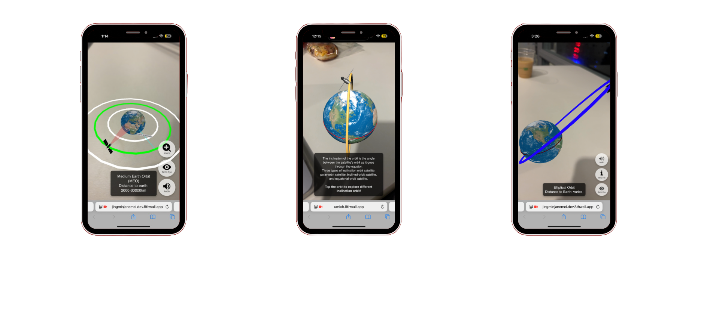

AR Project: Basics of Rocket Science

Basics of Rocket Science is an AR learning experience built as supplemental material for U-M’s online rocket science course, used by students around the world. It helps learners identify different orbits by altitude and inclination, and understand why each orbit type matters.
Why this project
Team research found the course had low retention and engagement, so we chose it as the target for a more interactive supplement. Instead of only reading about orbits, students can explore an Earth AR simulator and learn through direct interaction.
My work
I was the only developer on the team. I built the Earth AR simulator in 8th Wall with A-Frame and Three.js — including the full interaction design for Earth and its orbits (clickable orbits, fact pop-ups, and UI meant to stay intuitive). The demo videos below show those interactions end to end.
Basics: Rotate and drag objects, and use birds-eye view to flatten planets and orbits.
Orbit select: Tap an orbit to highlight it and show its distance from Earth.
Satellite zoom: Zoom to a satellite’s view to see its coverage as a red disk on Earth.